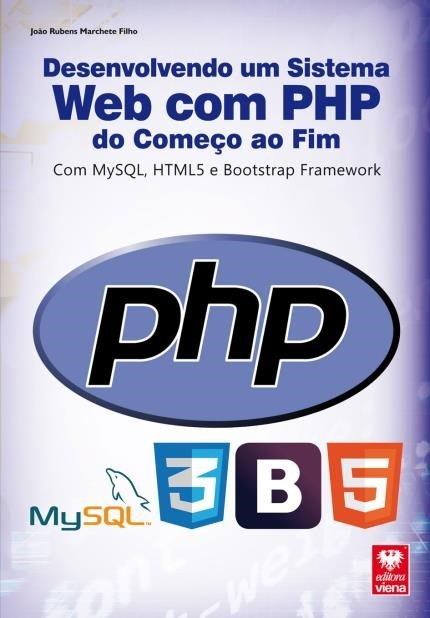

Desenvolvendo Um Sistema Web Com Php Do Começo Ao Fim

Desenvolvendo Um Sistema Web Com Php Do Começo Ao Fim

O PHP (Hypertext Preprocessor) é uma linguagem utilizada para o desenvolvimento de aplicações para a Web. É de fácil utilização e possui uma grande diversidade de recursos. Essa linguagem permite a criação de páginas dinâmicas e rápidas. É muito utilizada no mercado, orientada a objetos e de fácil acesso por ser uma linguagem de código aberto.
O livro “Desenvolvendo um Sistema Web com PHP do Começo ao Fim” aborda o processo de criação de uma aplicação web, da concepção até a publicação, podendo ser utilizado para aperfeiçoamento ou inicialização de programadores. Está dividido em capítulos complementares que possibilitam uma compreensão gradativa das opções e ferramentas da linguagem PHP. Entre os tópicos abordados estão: as tecnologias e ferramentas envolvidas, o design do desenvolvimento, o armazenamento de dados, o tema para aplicação, configuração do ambiente de desenvolvimento, os aplicativos para desenvolvimento, o banco de dados, o design, a programação, a definição dos elementos das páginas, a implementação dos elementos, estilos para páginas, a modelagem do banco de dados, como salvar e visualizar o script, manipulação de registros, o desenvolvimento das classes de modelo e de controle, a mesclagem de projetos, a hospedagem da aplicação, a configuração do banco de dados na aplicação, os códigos da aplicação, entre outros.
Categoria: Programação, programação web, tecnologia
Saiba Mais